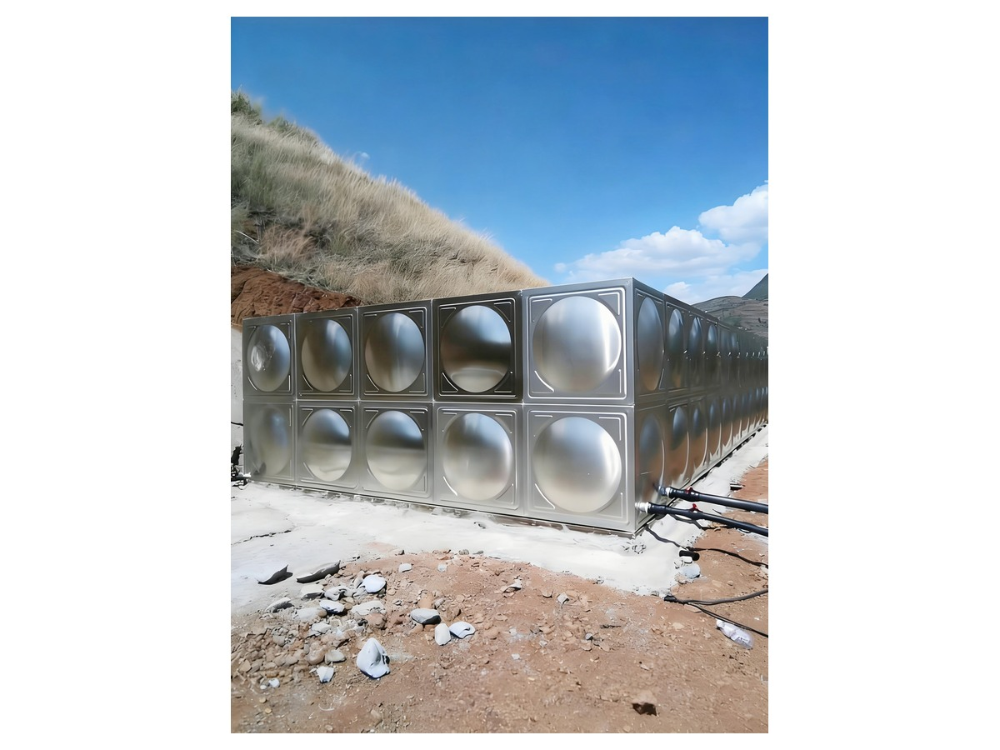

供水泵组、不锈钢水箱与净水设备，满足不同流量、压力和用水需求。
设备外观与配置，点击图片可放大查看。

供水泵组侧重压力与流量；净水设备还需明确原水水质、处理目标和消毒配置。
请提供原水检测及用水用途，便于确定净化、消毒和后处理配置。
供水泵组与不锈钢水箱配合调节供水；净水设备根据原水水质和用水要求配置。
设备选型 · 泵房布置 · 图纸配合
留下项目类型、规模和联系方式，便于进一步核对技术需求。
在线留言暂未开放，请通过电话咨询。 18026396076
请通过电话与我们联系。